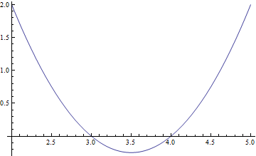
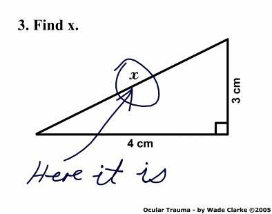

Applications
Algebraic Habits of Mind

What are Algebraic Habits of Mind?
In his book Driscoll provides a Framework under which we can understand and develop algebraic thinking in our own and in our student's mathematical work. The three main components of said Framework are: Doing-Undoing, Building Rules to Represent Functions and Abstracting from Computation. These are key features that enables a facility to think about functions and how they work -as inBuilding Rules to Represent Functions-, and also to think about how the structure of a system relates to calculations -Abstracting from Computation-. In either case we can think of an algebraic problem as roughly having "two" directions: from unknown to answer and from answer to unknown, and thus Doing-Undoing ties the pieces of this framework together.

Figure 1: A Framework for developing Algebraic Habits of Mind
Let us explore each of these components:
Doing-Undoing
Why is it that when we ask one type of question students seem to do a reasonable good job but when we ask an slightly different but related question they have a considerable harder time answering it? For example, if we ask students to compute the first few terms of a sequence given by: f(n) = n^2+1, students need just to plug in a few numbers say 1,2,3,4 and 5, to provide an answer. In general this type of question build from their understanding of arithmetic and so students with a solid arithmetic foundation should have no problem at all. In contrast, if we ask the following question: what rule or function describes the following sequence: 2,5,10,17,26,...? Even students with solid arithmetical background might have a harder time answering this question even tough one is just the reverse of the other.
As stated by Driscoll "effective algebraic thinking sometimes involves reversibility (i.e., being able to undo mathematical processes as well as do them)." Ideally, we as teachers and our students should be able to not only use an algebraic procedure to obtain an answer (the "Doing" direction), but also work our way from the last step of said procedure back to the original input to the problem (the "Undoing" direction). This of course assumes the procedures are reversible, which is not always the case. Hence, in applying this type of reasoning, exercises and examples should be carefully chosen so that they are reversible. In fact, types of procedure that are not reversible are very important in other fields on inquiry, for example in Cryptography.
Building Rules to Represent Functions
Consider the previous example of finding a rule for a given sequence of numbers. We can also interpret this example as the capacity to organize data into patterns such that the input (the data) is related to output in a well-defined functional form. Organizing data and uncovering hidden relationship is a crucial ability that all citizens of our modern world should posses. Our modern world is characterized, in among many other ways, as one where data plays a key role. Everyday we are bombarded with lots of data which we must make sense of. The algebraic habit of mind of Building Rules to Represent Functions I think encaptures this fundamental ability of transforming data into functions.
One obvious advantage is that by turning data into function we are able to both summarize and characterize data into simpler form which we can later study abstractly. To continue with our example, it seems intuitively easier to manipulate and understand the expression f(n) = n^2+1, which is a finite expression consisting of only two basic operations (multiplication and addition) than to deal with the infinite sequence of numbers 2,5,10,17,26,..., even tough they are both suppose to represent the same object. Note how interrelated this issue is with that of Doing-Undoing. As clearly stated by Driscoll: "the capacity to understand how a functional rule works in reverse generally makes it a more accessible and useful process.
Abstracting from Computation
This is my favorite Algebraic Habit of Mind. Maybe this has to do with my computer science background and how much of computing is really just abstracting certain features of a system. Or maybe just with my fascination for the word "abstract" and how it seems to relate to almost everything we do on a daily basis (at times the word Abstract seems to be another buzzword, so I am going to refer you to WITTGENSTEIN quote on my page on teaching algebra). In any case it seems that one of the key features of Algebra is the ability to manipulate quantities without knowledge as to what the exact value of the quantity is. This Habit of Mind directly builds in previous knowledge from arithmetic but at the same times generalizes to far more powerful and reaching situations.
A good example of Abstracting from Computation is the famous sum of the first n natural numbers. This is a very rich mathematical problem that has been worked in a myriad of ways. I encourage you to know more about it by reading the corresponding Wikipedia entry. The problem is easily stated: What is the sum of the first n numbers? That is: 1+2+3+...+n, where n is some unknown but fixed natural number. This is a good example where the structure of the problem could help us solve it by first abstracting or ignoring what particular numbers we are using in this sum and instead focusing on what properties these numbers have. We know they are commutative and associative. So, we can take this sum in any order we like. Of course, there are many possible different orders and some might not reduce the complexity of the problem at all. Here is where abstraction, that fuzzy term, comes into play by realizing that one particular rearrangement is very useful. Take the first and the last number, 1 and n. What do they add up to? n+1. Now take the second and the term before the last, i.e., 2 and n-1. What do they add up to? 2+(n-1) = 2+n-1 = n+1. You can probably see a pattern emerging now. Just group numbers, two at a time such that the sum is n+1. The question is now, how many such numbers do we have? A moment of thought shows that, if n is even, then there are exactly n/2 such pairs. Hence, the sum of the first n numbers is [n/2](n+1) = [n(n+1)]/2. This formula also works in case n is odd because in that case n+1 is even.
Some (More) Examples
There are (literally) thousands of examples of algebraic habits of mind. Don't believe me? Try this google search. So I will just try to summarize some of it next. But before I do so, I want to point out that you can come up with your own examples. In fact, part of effective teaching amounts to picking right examples. In some cases this means choosing examples from an example provider (such as a textbook or the internet), while in other cases this might mean you will have to construct your own examples and tailor them to the specific objectives for a given lesson or lecture. In any case, for Algebraic Habits of Mind, it is useful to think about the following (taken from Driscoll):
- Doing-Undoing
- How is this number in the sequence related to the one that came before?
- What if I start at the end?
- Which process reverses the one I’m using?
- Can I decompose this number or expression into helpful components?
- Building Rules to Represent Functions
- Is there a rule or relationship here?
- How does the rule work and how is it helpful?
- Why does the rule work the way it does?
- How are things changing?
- Is there information here that lets me predict what’s going to happen?
- Does my rule work for all cases?
- What steps am I doing over and over?
- Can I write down a mechanical rule that will do this job once and for all?
- How can I describe the steps without using specific inputs?
- When I do the same thing with different numbers, what still holds true? What changes?
- Now that I have an equation, how do the numbers (parameters) in the equation related to the problem context?
- Abstracting from Computation
- How is this calculating situation like/unlike that one?
- How can I predict what’s going to happen without doing all the calculations?
- What are my operation shortcut options for getting from here to there?
- When I do the same thing with different numbers, what still holds true? What changes?
- What are other ways to write that expression that will bring out hidden meaning?
- How can I write the expression in terms of things I care about?
- How does this expression behave like that one?
Why developing Algebraic Habits of Mind is important for the teaching of Algebra in grades 7-12?
By now the importance of these Algebraic Habits of Mind should be apparent. However, let me give a few final comments in the case of teaching of Algebra in grades 7-12. Thinking about why developing Algebraic Habits of Mind is important for the teaching of Algebra in grades 7-12, necessarily forces us to think why teaching Algebra is important at all. Or why we should even teach Algebra to begin with? I think this is an easy question to answer. Although, as stated in my teaching algebra page, Algebra is a concept hard to define, we know it has certain features that are valuable as reasoning tools. And we all know people who can reason effectively are more likely to become citizens capable of making right choices with the information that is provided to them.
In general, I think that Algebra enable us (directly and indirectly) to: Think critically, Solve problems, Communicate well and Work collaboratively. Note that these are all essential skills for successful individuals regardless of the particular position they have in society. As teachers we want our students to succeed beyond the classroom, so we better make sure the tools that we provide to them are going to serve this purpose. Algebra, without a doubt is one of them. One way to effectively teach Algebra is through developing Algebraic Habits of Mind. Hence, I think is important to develop Algebraic Habits of Mind Algebra in grades 7-12. Moreover, Algebra is first introduced in grades 7-12 and the first interaction with a subject is usually remembered by students long ago, even when the details of such interaction are forgotten. We also know that rules and recipes are easily forgotten. Therefore, teaching Algebra through Algebraic Habits of Mind where the subject is first introduced increases the chances that the student will remember algebraic tools and procedures long after class is over. This is fact is aligned with the philosophy of Reasoning and Sense Making in Algebra, a philosophy I wholeheartedly agree with.
Further Resources
Is impossible to summarize all that there is to know about Algebraic Habits of Mind in just one place. This is why this section provides links to more resources to help you think about Algebraic Habits of Mind both in your algebraic work and when preparing teaching lessons.
Connecting Algebra with Geometry
What do we mean by connecting Algebra with Geometry?
Geometry is one of the first branch of mathematics. The study of shape, size, relative position of figures, and the properties of space is one of immense historical importance (for instance, how to know the value of a crop of olives? how do we measure it? how do we measure the size of land?). Moreover, Geometry connects directly with our sense of vision and we can probably agree that we are highly visual creatures. Hence, Geometry provides a fertile soil for algebraic exploration and vice versa. In short, we would like to connect Algebra with Geometry and thereby providing a more solid understanding of both subjects. An interplay exists between algebra and geometry: such geometric representations as graphs or figures can cast light on algebraic expressions and equations, and algebraic representations can be used to deduce geometric relationships (Katz 2007).
Various authors have explained the connections between Algebra and Geometry in different ways. For example, in Focus in High School Mathematics, the authors state that “Geometric interpretations of algebraic identities can help them give meaning to and make sense of algebraic symbols and calculations. Conversely, casting geometric phenomena in algebraic terms can give them a way to reasons about the geometry”. Other authors phrase this slightly different, for example one could say that connecting Algebra with Geometry means "Representing geometric situations algebraically and algebraic situations geometrically; using connections in solving problems". In any case we can probably agree that Geometry can serve as a model for Algebraic identities and thereby providing content and meaning to them. This is a rather effective way to make sense in teaching Algebra (and mathematics in general).
Examples
A few relevant examples are:
- Area Formulas
- Maximizing Area
- Algebraic proofs of geometric theorems
- Geometric proofs of algebraic theorems
- Graphing
- Geometric representation of an expression
- Ratios, rates, scale measurements and similar drawings
As usual, these are just a few out of many possible ways to connect Algebra with Geometry. Let us take a closer look at the following examples:
Equation of a circle
This is a nice example of connecting Algebra with Geometry. The only previous knowledge needed to construct an equation of a circle is that of distance between points. Suppose students know that the distance between point P= (p1,p2) and Q = (q1,q2), denoted as d(P,Q) is given by d(P,Q) = sqrt{(p1-q1)^2+(p2-q2)^2}.
Area of a Triangle
From the Geometric properties of area we know that the area of a rectangle (or a parallelogram in general) is just its base times its height. A(parallelogram) = base x height, or using the notation in the figure above, A(parallelogram) = b x h. But clearly, from the figure, whatever the area of the triangle A(triangle) is, it needs to be half of the area of the parallelogram. This easily justifies the algebraic expression A(triangle) = 1/2 x b x h.
Scale Measurements and Drawings
Another example of connections between algebra and geometry can be found on the reformed text Mathematics Applications and Connections Course 1. For example, on page 352, unit 10-1, example 1 “Connection”, this book does a very good job of connecting the concept of ratio with elementary geometric shapes in the form of a tangram. This example does not only illustrate an important use of ratio to compare geometric shapes but it also provides the student with an intuitive meaning of ratio. Moreover, the example also helps with understanding area of triangle and squares and how these areas are in a 1 to 2 ratio, i.e., the area of a triangle that shares an edge with a square is half the area of the square. Finally, the book provides further exercises using tangram puzzles that help to make the connection between algebra (in the form of ratio) to geometry (in the form of geometric shapes). The following picture depicts the use of the book in connecting algebra with geometry.
Why connecting Algebra with Geometry is important for the teaching of Algebra in grades 7-12?
I am convinced that connecting Algebra with Geometry is not only important for the teaching of Algebra in grades 7-12, but it is an essential component of proper mathematical understanding. Students usually come with an a priori sense of Geometry while Algebra seems to be an externally imposed framework to work with mathematical quantities. However, if geometric identities are related to geometrical shapes, then this sense of arbitrariness can be minimized and students can transition and Abstract from Computations more easily.
Further Resources
Is impossible to summarize all that there is to know about Connecting Algebra with Geometry in just one place. This is why this section provides links to more resources to help you think about different and creative ways to cast Geometric phenomena in Algebraic terms and vice versa. These are great resources when preparing teaching lessons.
Meaningful Use Of Symbols
What do we mean by Meaningful Use Of Symbols?
In working with algebraic expressions, one important aspect is that of meaningful use of symbols. Since symbols are at the core of algebra and algebraic manipulation, a successful treatment of algebra would be one that chooses variables and construct expressions and equations in perspective. It should also interpret the form of expressions and equations and manipulate expression to show interesting interpretations. An equivalent way to express this is that Meaningful use of symbols includes carefully defining the meaning of symbols introduced to solve problems. This feature of Algebra and successful Algebraic Teaching is closely related to that of Mindful Manipulation, so I encourage you to read my page on that as well.
A particular feature of Meaningful Use of Symbol is that of specifying units. This seems to be a particular source of difficulties for students, even more so when we start to operate on quantities without care for units. This difficult is popularly know as Apples and Oranges, i.e., when we try to compare units that are incommensurable. Extra care must be taken to make sure that, whenever appropriate, units have been specified for an unknown quantity. In other words, symbols are clearly label to stand for a quantity with some dimensions. If that is the case, then operations of incommensurable quantities should be apparent and the student could easily avoid mistakes.
Note that these are not the only features of Meaningful Use Of Symbols. Other important features are to distinguish among the three main uses of variables: (1) as unknowns, (2) as placeholders that can take on a range of variables and (3) as parameters of a function. Some of this uses are more common that others, for example using variables as unknowns amounts to operating on an algebraic expression to solve for an unknown (e.g., find x in 4x+3=11). In this type of use the variable is unknow but fixed and refers to one value only. Later we realize that variables are much richer and can be use as placeholders for ranges of values to show algebraic identities (e.g., (a+b)^2 = a^2+2ab+b^2). More advance treatments use the notion of a function and parameters, for example, what is the effect of changing "a" in the function y = ax^2+b. All these treatments of Symbols in Algebra (1-3) are related but also somewhat separate and they should be treated as such.
Examples
Finding roots and max/min of a polynomial
In general, finding roots of a polynomial is not a trivial procedure. However, in special cases we can use algebra to help us by making Meaningful Use of Symbols and expressions. For example, consider the polynomial f(x) = x^2-7x+12. Which form do you think will be more helpful in determining the roots of this polynomial? (1) f(x) = x^2-7x+12 or (2) f(x) = (x-3)(x-4). Clearly form (2) is more sensical in this case where we can just plug x = 3 and x=4 to find both roots. This example also connects with Geometry in a nice fashion by exhibiting the graph of this parabola:

We can also find the minimum location and value of this polynomial by factoring in the form f(x) = x^2-2mx+m^2+p = (x-m)^2 + p, so that f(x) = x^2-7x+12 = (x-7/2)^2-1/4. If we compare the forms (1) f(x) = x^2-7x+12, (2) f(x) = (x-3)(x-4) and (3) f(x) = (x-7/2)^2-1/4, then clearly form (3) makes more sense for minimization purposes. Since (x-7/2)^2 is always positive, the minimum value is -1/4 achieved at x = 7/2. This example shows that Meaningful Use of Symbols depends on choosing variables and constructing expressions and equations in perspective or in appropriate context. Finally, note that there is no reason to stick with parabolas. Cubics and quartics equations provide a fertile field of examples where Meaningful Use Of Symbols can go a long way in reasoning and sense making in Algebra.
Why Meaningful Use Of Symbols is important for the teaching of Algebra in grades 7-12?
Symbols are at the core of Algebra. If we start using symbols without any regard for their meaning, then students will have a hard time grasping the power and use of Algebra. In fact, poor uses of symbols are at the core of many critiques and jokes about math, like this one:

On the other hand, part of the power and real beauty of math lies on its power to generalize and derive valid relations even without reference to concrete object. However, such a power should be exercised with care, so that Reasoning and Sense Making do not go out of the window the moment we write let x = ...
Linking expressions and functions
What do we mean by Linking expressions and functions?
There is a subtle but very important shift in Algebraic thinking when we move from thinking of an algebraic expression as a placeholder for a final, numerical answer into thinking about functions. Mathematical Functions, which are at the heart of Mathematics (if they are not the heart itself), are richer but more complicated objects than algebraic expressions, although the two are related and in some contexts are very similar concepts. Differences between algebraic expression as formal symbols and functions become apparent when we use algebra as a Bookkeeping device (see here for an example), where we manipulate these expressions without regard for the actual numerical values that variables -letters- might take. In contrast, a function is all about input/output values, and how these numbers related to each other.
Consider the following excerpt (next three paragraphs) taken from Focus in High School Mathematics: Reasoning and Sense Making, where the authors do a fantastic job in describing what do we mean by Linking expressions and functions:
"Although multiple representations of functions—symbolic, graphical, numerical, and verbal— are commonly seen, the idea of multiple algebraic representations of functions is less commonly made explicit. Different but equivalent ways of writing the same function may reveal different properties of the function.
Symbolic representation shifts to a higher level when we start to use letters to stand for functions and introduce function notation (Saul 2001). The magnitude of this shift is often overlooked. High school students have difficulty with extending the four basic arithmetic operations to functions and also with composition of functions. Embedding these experiences in a context may enhance students’ comprehension of the concepts and improve both their retention and their ability to make connections (Katz 2007),
Building fluency in working with algebraic notation that is grounded in reasoning and sense making will ensure that students can flexibly apply the powerful tools of algebra in a variety of contexts both within and outside mathematics."
I think these last three paragraphs exactly summarize what linking expressions and functions entail and why is it important to make these connections explicitly in the classroom. In fact, they do such a good job, I am going to allow myself to use their example in the following section.
Examples
This next example is entirely due to the authors of Focus in High School Mathematics: Reasoning and Sense Making, and it is reproduced here only for educational purposes. The authors (THE NATIONAL COUNCIL OF TEACHERS OF MATHEMATICS, INC.) are the sole owners of this material. By the way, note that this example also works as an example of Connecting Algebra with Geometry.
Why Linking expressions and functions is important for the teaching of Algebra in grades 7-12?
Explicit connections between expressions and functions are an essential ingredient of more advance Mathematics, in particularly Calculus. It is in grades 7-12 that proper foundations should be lay so that students have a higher probability of being successful in more advance courses. Moreover, the habit of linking expressions with functions provide students with tools to analyze a problem, identify relevant concepts, representations, or procedures; seek patterns and relationship seeking and using creative and useful connections.
Mindful Manipulation
What do we mean by Mindful Manipulation?

A particularly difficult point of Algebra is that many expression might mean (or evaluate to) the same thing. For example, the quantity x^2 is the same as the quantity x^2+1-1 or 2(x^2)/2, and so on. (By the way, this is also related to the main difficulty with fractions, i.e., many fractions mean the same thing: 2/3 = 4/6=8/12,..., multiple representation of mathematical quantities adds an interesting and necessary complexity to our understanding of the world). Okay, so I agree, these are pretty benign examples. Just take the +1-1 to 0 and 2/2 to 1 and you are done. However, these are the beginnings of more complicated examples where representation do have an impact in our understanding and ability to work with these quantities. Consider the case of a quadratic polynomial as explain in Meaningful Use of Symbols. Which one of the following representations do you think is more useful to find (a) minimum/maximum values and (b) roots, (1) x^2-7x+12, (2) (x-3)(x-4) or (3) =(x-7/2)^2-1/4?
These examples hints at what we mean by Mindful Manipulation. As stated by the authors in the Reasoning and Sense Making series: "Mindful manipulation includes learning algebraic manipulation as a process guided by understanding and goals (how do I want to use this expression, and what will make it most useful for this purpose?) and seeing that the basic rules of arithmetic provide a rationale for all legitimate manipulations of polynomial expressions. Of these, the distributive property, which is the only rule connecting the operations of addition and multiplication, is the one to which we must constantly appeal when doing anything that involves both operations at once, including a wide range of manipulations: expanding, factoring, collecting like terms, and putting fractions over a common denominator."
Examples
Algebra as Bookkeeping: flipping a coin

Consider the usual experiment of flipping a fair coin n number of times. We can use Algebra to figure what are the possible number of heads or tails we can obtain from this experiment. To keep things simple (for now) let us consider this experiment when we flip the coin twice. In the spirit of Meaningful Use Of Symbols, let H denote the case when we flip a head and T denote the case of a tail. Then, consider the following quadratic expression: (H+T)^2 = (H+T)(H+T) = HH + HT + TH + TT. Note that I have rewritten the product (H+T)^2 not in the usual form (H+T)^2 = H^2+2HT+T^2, but instead in a form that is mindful for the problem at hand.
The interpretation is the following: if we flip a coin we might get either a head or a tail. Symbolically, we can think of this case as H+T, where we read the symbol + as a kind of "or". If we flip a coin twice, then we can also get a heads or a tails on the second flip. But if we analyze the polynomial (H+T)^2 = (H+T)(H+T), we see that for each flip we can associate the formal expression (H+T). Two flips will then be written as (H+T)(H+T) = HH + HT + TH + TT once you multiply this out. This last expression contains the information of all possible outcomes, i.e., if we read multiplication as a kind of "and", then HH means we could get two heads, HT means we can get a head on the first flip and a tail on the second and so on. Note that these symbols are concatenated with a "+" so that we could either get HH (two heads) or HT (first a head and then a tail) or TH (first a tail and then a head) or finally TT (two tails).
Further Bookkeeping: how many tails? how many heads?
This very interesting use of Algebra as a Bookkeeping device where we read symbols just as formal expressions rather than numbers and extract information from them can be extended further. Consider now the case where we want to know not all possible outcomes of flipping a fair coin twice, but rather we want to know what is more likely: to get all heads or to get a heads and a tails? Looking back at the expression (H+T)^2 we can see now that writing this expression in the more usual form: (H+T)^2 = H^2+2HT+T^2, is a more Mindful Manipulation since the information encoded in this expression reads something like: we can get either all heads and or all tails, each of this have only 1 possible outcome (you can think of H^2 as having a coefficient of 1 in front of it so H^2= 1*H^2) or we can get HT (heads and tails) in two cases wich we know are HT and TH, hence HT+TH = 2HT, exactly the expression we had before. Clearly, it is more like to get either a head or a tail than getting both heads of both tails, just by reading the algebraic expression. Keep in mind that his only works in case the coin is fair.
Why Mindful Manipulation is important for the teaching of Algebra in grades 7-12?
There are too many ways to manipulate an algebraic expression. However, for a given goal there are usually fewer or just a few ways to manipulate an expression to get it into a form from which we can easily extract meaning. As teachers, we should point students in the right direction and show them that the power of algebra lies not in manipulating an expression just for the heck of it, but in Mindful Manipulation, oriented towards a clear goal.